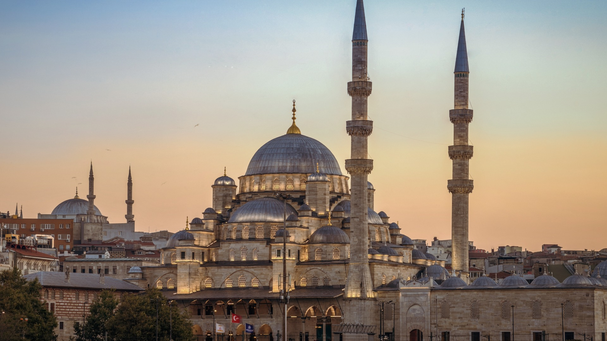
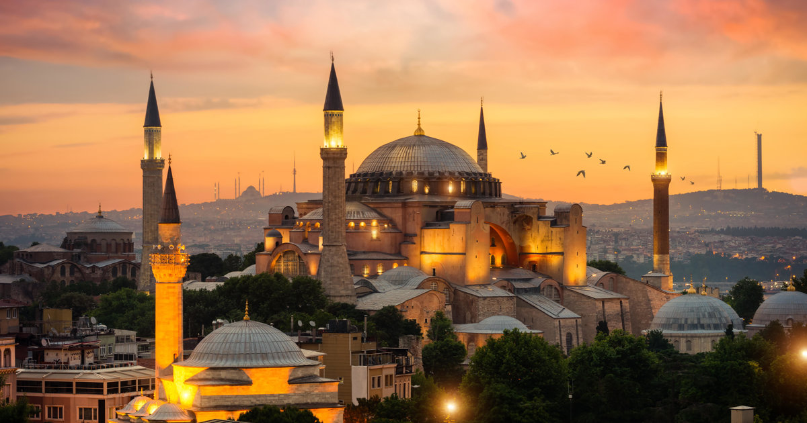
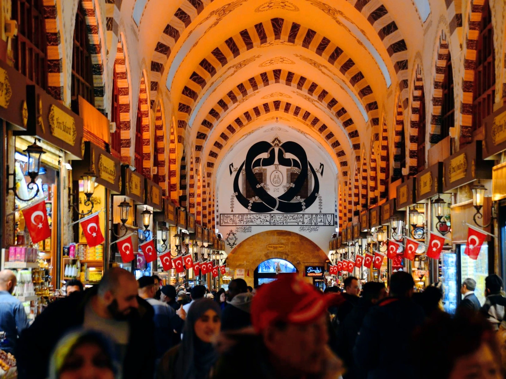
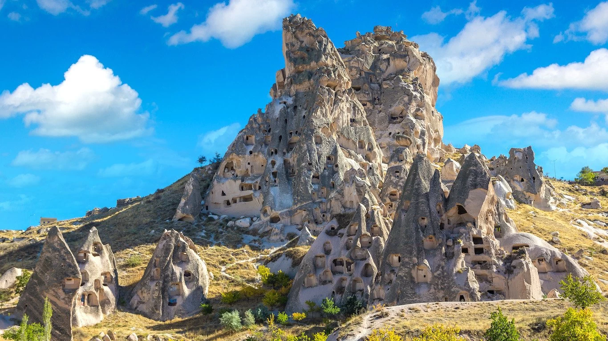
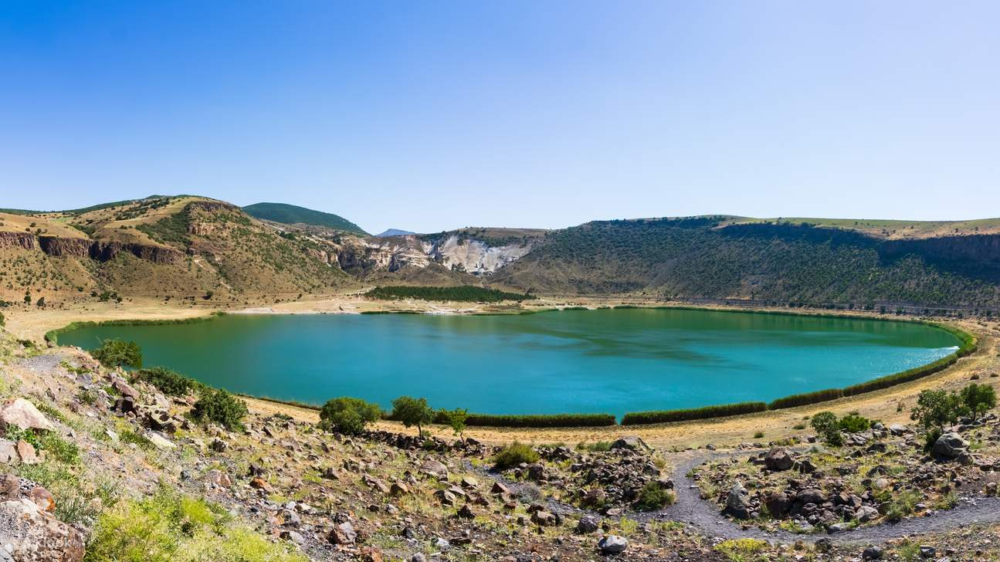

Descubre el puente eterno entre Oriente y Occidente en un viaje que combina el esplendor imperial de la antigua Constantinopla con los paisajes lunares más surrealistas de Anatolia. Un itinerario diseñado para maravillarte con mezquitas monumentales, bazares centenarios y valles esculpidos por la naturaleza, combinando cultura milenaria y experiencias únicas con la máxima comodidad.
El recorrido comienza en la vibrante Estambul, donde recorrerás las joyas de su península histórica como Santa Sofía, la Mezquita Azul y el Palacio Topkapi, además de navegar por las aguas del Bósforo entre dos continentes. Desde allí viajarás al corazón del país para adentrarte en Capadocia, una región mágica de chimeneas de hadas, ciudades subterráneas y monasterios excavados en la roca. Un programa completo y equilibrado con vuelos internos incluidos, ideal para exprimir los grandes imprescindibles de Turquía en una semana.
Día 1: Origen – Estambul

Llegada al Aeropuerto de Estambul. Recepción por parte de nuestro equipo local y traslado privado al hotel seleccionado. Resto del día libre para tener una primera toma de contacto con la ciudad. Alojamiento.
Día 2: Estambul (Joyas Bizantinas y Otomanas)

Desayuno. Salida para realizar una visita guiada de día completo por el casco antiguo: el Hipódromo Romano, la majestuosa Mezquita Azul, la imponente Basílica de Santa Sofía y el Palacio Topkapi, antigua residencia de los sultanes otomanos. Por la tarde, tiempo libre para perderse por los laberínticos pasillos del Gran Bazar. Alojamiento.
Día 3: Estambul (Bósforo y Bazar de las Especias) – Capadocia

Desayuno. Por la mañana, visita al colorido Bazar Egipcio o de las Especias, seguido de un paseo en barco por el estrecho del Bósforo para admirar los palacios y fortalezas de las orillas europea y asiática. A la hora acordada, traslado al aeropuerto para tomar el vuelo doméstico hacia Capadocia. Llegada y traslado al hotel. Cena y alojamiento.
Día 4: Capadocia (Valles y Museos al Aire Libre)

Desayuno. Día completo explorando esta región única en el mundo (posibilidad opcional de realizar un paseo en globo aerostático al amanecer). Visitaremos el Museo al Aire Libre de Göreme con sus iglesias rupestres, los valles de Pasabag y Devrent con sus curiosas formaciones rocosas, y un taller tradicional de cerámica en Avanos. Cena y alojamiento.
Día 5: Capadocia (Ciudades Subterráneas y Valle de Ihlara)

Desayuno. Excursión hacia una de las impresionantes ciudades subterráneas excavadas por antiguas comunidades cristianas (Kaymakli o Özkonak). Continuación hacia el verde Valle de Ihlara para caminar junto al río Melendiz y parada fotográfica en el mirador del Castillo de Uchisar. Cena y alojamiento.
Día 6: Capadocia – Estambul

Desayuno. Tiempo libre hasta la hora acordada para el traslado privado al Aeropuerto de Estambul y embarque en el vuelo de regreso a ciudad de origen. Fin de nuestros servicios.